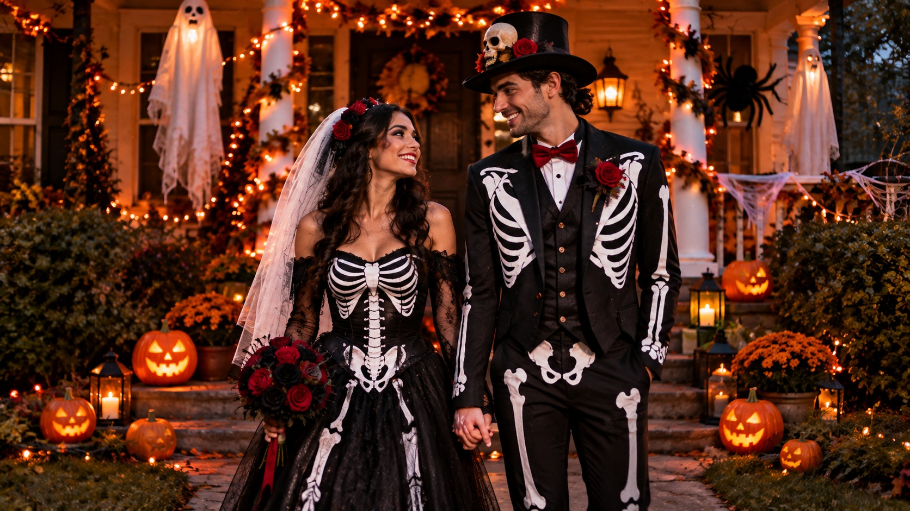

Halloween Couple Costume Ideas 2026: 30 Matching Looks for Partners
Published October 9, 2026 · Updated October 9, 2026 · By EventBuzz Team

Matching Halloween costumes turn two outfits into one unforgettable entrance. For Halloween 2026, the best couple looks balance instant recognition with comfort you can actually wear all night, whether you are heading to a house party, a fancy-dress event, or trick-or-treating with the kids. Below are 30 matching ideas grouped by mood, plus honest budget guidance for the USA and UK so you can plan without last-minute panic.
How to Choose a Matching Costume That Works
- Match the theme, not the fabric. You do not need identical outfits. A shared colour palette, era, or story reads as "couple costume" in every photo.
- Agree on the comfort level. One partner in a full mascot suit and one in a T-shirt looks unbalanced. Match effort as well as theme.
- Think about the venue. Outdoor events in late October need layers underneath. Indoor parties punish heavy foam and full-face masks.
- Test it sitting down. Tails, wings, capes and inflatables all fail the chair test. Wear it at home for ten minutes before the night.
- Budget as a pair. One strong shared prop (a bouquet, a light-up sign, matching headpieces) sells two simple outfits for the price of one costume.
Classic Spooky Couples (1–6)
1. Skeleton Bride and Groom
The look in our photo and the most photographed couple costume of the season. Black formal wear painted or printed with bones, red roses, and simple half-skull makeup. It works for weddings-themed parties, elegant venues, and couples who want spooky without silly.
2. Vampire Lord and Victorian Vampire
Capes, waistcoats, lace, and dark red accents. Fangs and pale makeup take five minutes, thrift shops are full of velvet in October, and the pairing ages beautifully in candlelit photos all evening.
3. Sheet Ghost Duo
Two white sheets, cut eye holes, sunglasses on top. Nearly free, endlessly comfortable under warm layers, and somehow funnier as a pair. Add "his and boo" signs if you want the joke spelled out.
4. Witch and Warlock
Pointed hats, layered black clothing, and one shared broom or staff prop. Easy to assemble from your own wardrobes in the USA or UK, and it scales from cute to genuinely dark depending on makeup.
5. Frankenstein and the Bride
Green face paint, neck bolts from a craft shop, a tall white-streaked wig, and a battered suit. A century-old pairing that every generation recognises instantly, even from across a crowded room.
6. Day of the Dead Catrín and Catrina
Intricate painted skull faces, formal wear, and flowers. The makeup does the heavy lifting, so keep outfits simple and elegant. Respectful styling matters here: flowers, candles, and colour, never costume-shop caricature.
Funny Food and Object Couples (7–12)
7. Peanut Butter and Jelly
Two sandwich-board costumes in brown and purple with your names on the front. Lightweight, hilarious in motion, and a favourite for couples who would rather be laughed with than admired.
8. Plug and Socket
The classic "we belong together" joke in costume form. Foam or cardboard builds work; buy the tee versions if DIY is not your thing. Expect strangers to ask for photos.
9. Chips and Salsa
A nacho-triangle tunic for one partner and a red salsa-jar outfit for the other. Bright, snackable, and very comfortable for dancing. Add a "mild or spicy?" sign for the punchline.
10. Bacon and Egg
Breakfast as romance. Simple printed tunics, zero makeup, works over warm clothes, and reads clearly even in blurry party photos. A reliable low-effort, high-smile choice every year.
11. Holiday Tourists
Hawaiian shirts, cameras around necks, socks with sandals, and a giant map neither of you can fold. Everything comes from your own wardrobe; the comedy is in the confident pointing at nothing.
12. Soap and Loofah
One partner as a shiny soap bar, the other wrapped in soft tulle as a loofah. Unexpected, cheap to build with fabric and stuffing, and genuinely comfortable for a long night.
Movie and Story Couples (13–18)
13. Morticia and Gomez Addams
Black elegance, one red rose, and absolute devotion. Gomez needs a pinstripe suit and a moustache; Morticia needs a long black dress and red nails. The attitude is the real costume.
14. Barbie and Ken
Pink on one side, beachy pastels on the other. Still a crowd favourite in 2026 thanks to endless variations: roller-skate, cowboy, or disco versions let you match your own wardrobes.
15. Mario and Princess Peach
Red cap, blue overalls, a pink gown and a crown. One of the few couples costumes where the props (moustache, crown, gloves) do most of the storytelling for you.
16. Shrek and Fiona
Green face paint, ogre ears on a headband, and a plaid dress or tunic. Warm, funny, and kind-hearted, with room for layers underneath for cold Halloween nights outdoors.
17. Jack Skellington and Sally
Pinstripes meet patchwork. Jack needs a suit and white face paint with stitched smile lines; Sally needs a patchwork dress and long red hair. Tim Burton fans will find you fast.
18. Pirate Captain and Mermaid
A tricorn hat and coat for one, shimmering scales and shell jewellery for the other. Part spooky, part glamorous, and both halves are easy to find in US and UK costume shops.
Easy DIY Couples (19–24)
19. Matching Bank Robbers
Striped tops, black trousers, eye masks, and money-bag props marked with a dollar or pound sign. Assembles in fifteen minutes from clothes you own; the couple energy does the rest.
20. Angel and Devil
White and red, halo and horns. The oldest couple costume in the book because it needs almost nothing: one colour each, two headpieces, and excellent contrasting body language.
21. Cat and Mouse
Ears and whiskers for the cat; grey outfit, round ears and a long tail for the mouse. Playful chasing photos guaranteed. Great choice if one partner refuses a full costume.
22. Cowboy and Cowgirl
Plaid shirts, jeans, boots, hats and bandanas. Comfortable, warm, dance-friendly, and it uses clothes real people already own in both the USA and UK.
23. Retro Video Game Heroes (8-Bit Pair)
Pixel-style cardboard accessories, blocky props, and bold primary colours. The deliberate "low resolution" look makes imperfect DIY part of the joke rather than a flaw.
24. Scarecrow Pair
Plaid shirts, straw hats, raffia at the wrists and ankles, and stitched-smile makeup. Sweet rather than scary, which makes it ideal for school events and family parties.
Glamorous and Elegant Couples (25–30)
25. 1920s Gatsby Couple
Flapper dress or beaded headband for one, sharp suit and bow tie for the other. Gold and black accessories tie you together, and the look doubles as party-formal wear.
26. Masquerade Ball Couple
Your best evening clothes plus matching ornate masks. The secret weapon for couples who want Halloween elegance without buying full costumes. Choose masks in the same metal or jewel tone.
27. King and Queen of Hearts
Playing-card royalty: crowns, red and white tailoring, and heart motifs. Bold graphic shapes photograph brilliantly and stay readable even at a distance in group shots.
28. Red Carpet Celebrity Couple
Dress like you are dodging photographers: formal wear, sunglasses at night, and one shared dramatic accessory. Funny, glamorous, and completely free if your wardrobe cooperates.
29. Phantom and Christine
Half-mask and cape meet a flowing white or pastel gown. Theatrical, romantic, and a little haunting. A single red rose completes the story instantly.
30. 1950s Greaser and Pink Lady
Leather jacket, slicked hair, pink jacket, and retro curls. The dance floor is your natural habitat, and the costume still looks great when the jackets come off later.
Budget Guide for Couples (USA and UK)
Closet-first (almost free): robbers, tourists, angel and devil, cowboy pair. Spend only on one shared prop each. In the UK, charity shops are gold mines for velvet, pinstripes, and lace. In the USA, thrift stores stock Halloween rails from late September.
Mid-range: one bought statement piece each (hat, cape, crown, quality mask) over your own clothes. Seasonal shops like Spirit Halloween (US) and the Halloween sections of UK supermarkets and Asda's George range move fast after mid-October, so shop before the final weekend.
Premium: full matching sets from costume specialists or rentals. Rental makes sense for masquerade and Gatsby looks you will never rewear. Whichever country you are in, order online by mid-October; sizes vanish in the final week.
One rule that saves every couple: decide the budget together before either of you falls in love with a £120 replica waistcoat.
Conclusion
Thirty matching looks, one decision: pick the mood, match the effort, and let one shared prop tie you together. For Saturday, October 31, 2026, choose early, try everything on once at home, and the only scary thing left will be how good the photos look.
Keep planning with the rest of our Halloween 2026 series:
Have a brilliantly matched Halloween!
Frequently Asked Questions
What is the most popular couple Halloween costume for 2026?
Skeleton bride and groom is the standout choice for 2026: it is elegant, easy to customise with your own formal wear, and photographs beautifully. Barbie and Ken and Morticia and Gomez Addams remain close seconds for very different moods.
How can we match without wearing identical costumes?
Share a story, an era, or a colour palette instead of identical outfits. Matching headpieces, one prop you both interact with, and coordinated colours (black and red, gold and cream) read as a couple costume in every photo.
How much should a couple budget for Halloween costumes?
A closet-first look costs almost nothing beyond one shared prop. Mid-range couples typically buy one statement piece each. Full matching sets or rentals cost the most; decide the budget together first, and shop before the final week when sizes disappear.
Where can we buy couple costumes in the USA and UK at short notice?
In the USA, seasonal Halloween stores and large online retailers stock couple sets through October. In the UK, supermarket clothing ranges, charity shops for vintage pieces, and online costume specialists are the fastest routes. Order by mid-October for the best size choice.
What is the easiest last-minute couple costume?
Matching bank robbers: striped tops, black trousers, simple eye masks and one money-bag prop. Angel and devil is a close second, needing one colour each plus a halo and horns. Both assemble in about fifteen minutes.
Shop Matching Couple Costumes
Coordinated sets that make couple photos effortless.


Prices shown at the time of publishing and can change. Links take you to Temu, where shipping and delivery details are shown.